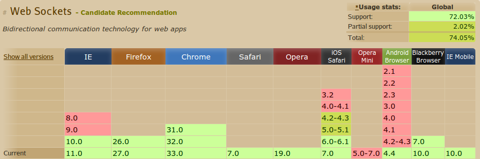
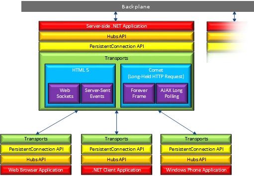
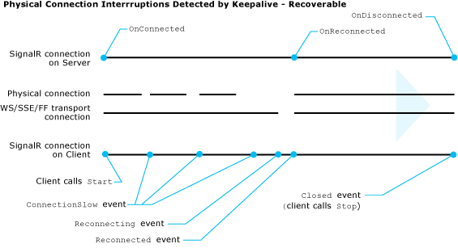
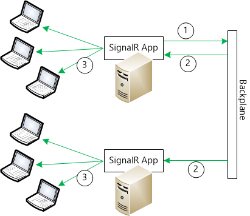

An Introduction to
SignalR
The Real-time Web
- Collaborative apps
- Financial apps
- Monitoring apps
- Games
- ...
Let's use WebSockets!
WebSocket is a protocol providing full-duplex communications channels over a single TCP connection.
It's a standard: RFC 6455 - what coud go wrong? :)
Where does it work?
On the server
IIS 8 or IIS 8 Express must be used, the server must be using Windows 8, Windows Server 2012, or later [1].
In the browser

[2]
SignalR to the Resque!
SignalR is...
- A client-server model communication library
- For ASP.Net (mostly)
- Multi-client platforms: Web, .Net, Windows Phone, WinRT, ...
- Website: asp.net/signalr
- Open-source (github.com/SignalR/SignalR)
- NuGet: install-package Microsoft.AspNet.SignalR
- Runs on Mono/Linux (1.x anyways)
Architecture overview

Persistent Connections

- Monitors transport layer
- Events informing the client/server
- Automatic reconnection mechanisms
- KeepAlive
- DisconnectTimeout
- ConnectionTimeout - for long polling
DEMO - Auction House
Let's see the above concepts in practice. The Auction House websites...
- Is a one page web application
- Uses SignalR to track the action items near real-time.
- Users can create and close auctoins.
- Users can bid on auctions.
- When action is closed, winner is anaunced.
The HUB
Creating and registering a Hub
- Descends from
Microsoft.AspNet.SignalR.Hub
- Public methods will be callable from clients
- Register in a OwinStartup class with
app.MapSignalR()
- Will map to
/signalr (overridable)
- Configuration: Cross-domain, Detailed error messages, Disable proxy generation
- Multiple Hubs are OK
The HUB - define callable methods
- Every public method.
- Parameters will be serialized with Newtonsoft.Json
- Naming convention
- "What take you so long?!" - use async
- The
Context property
The HUB - calling client methods
- dynamic - no compile time validation!
Clinets.All.methodClinets.Caller.methodClinets.Others.methodClinets.Client(connId).methodClinets.Group(grpName).methodClinets.AllExcept(connId1, connId2).method- ...
Groups
- Pub/Sub style group handling
- Server:
Groups.Add(connId, grpName), Groups.Remove(connId, grpName)
- Client:
proxy.server.joinGroup(grpName), proxy.server.leaveGroup(grpName)
- How to handle persistent group membership
The HUB - Extras
- Dependency injection
- Call client methods outside of the Hub:
GlobalHost.ConnectionManager.GetHubContext<THub>()
- Customizatio and the Hub Pipeline:
GlobalHost.HubPipeline.AddModule(new HubPipelineModule())
Performance and Scaling
One server can handle about tens of thousand messages per second, and thousands connections
Scale up for more throuput,
scale out for more connections
- Not for all usage-patterns! (e.g. No-no for a high-frequency app)
Scale out is done via
backplanes

- Windows Azure Service Bus
- Redis
- SQL Server
- Roll your own
/